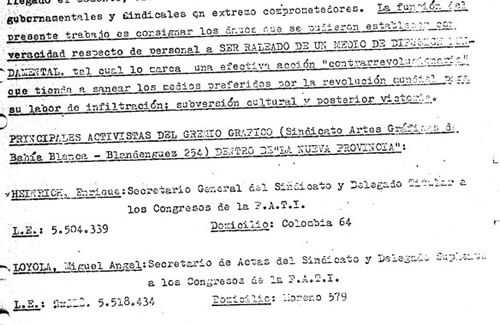

Real Chubut - Agencia de Noticias


“Fiel a la ideología familiar”

Nicolás Massot, electo diputado este año por la provincia de Córdoba, fue nombrado jefe del bloque macrista en Diputados. Es sobrino de Vicente Massot, imputado por delitos de lesa humanidad, por haber colaborada con la represión de la dictadura desde el diario familiar, La Nueva Provincia.
El apellido volvería a sonar fuerte en el gobierno de Carlos Menen, ya que Vicente, fue designado secretario de Asuntos Militares del Ministerio de Defensa en 1993 y debió renunciar meses después cuando trascendieron declaraciones suyas a favor de la tortura. Diez años más tarde, el ex funcionario acompañaba los primeros tímidos pasos de Macri en la política nacional.
En una entrevista en el Diario Clarín, Nicolas Massot, propuso ...”Cerrar capítulos de la década del 70´ como se hizo en Sudafrica y llamar a la “reconciliación”, ”…generaciones que ni siquiera vivimos es época tengan que seguir dedicándole el tiempo a estas situaciones, cuando hay otros COMBATES de la actualidad, como inflación , pobreza y la INFORMALIDAD LABORAL…”
El Tribunal Oral de Bahía Blanca juzgó y condenó a Castro y otros veintiún represores que actuaron durante el terrorismo de Estado bajo control operacional de la Base Naval Puerto Belgrano de la Armada Argentina. En el fallo se incluyó un artículo en que dispone que, una vez que la sentencia quede firme, el diario La Nueva Provincia deberá publicar una rectificación por haber difundido noticias falsas que encubrían los secuestros o asesinatos de nueve víctimas.
Por esas prácticas, que el mismo Tribunal consideró parte de una “comprobada campaña de desinformación y propaganda negra” ya en 2012, se encuentra imputado en instancia de instrucción Vicente Massot. Los fiscales que lo acusan, Miguel Palazzani y José Nebbia, entienden que la cúpula directiva del diario proveyó “aportes esenciales” al plan criminal del terrorismo de Estado, mediante la ejecución de operaciones psicológicas perfectamente tipificadas en reglamentos castrenses. El juicio que finalizó el 25 de noviembre incluyó además a los delitos de que fueron víctimas Enrique Heinrich y Miguel Ángel Loyola, dos obreros gráficos de La Nueva Provincia que fueron secuestrados, torturados y asesinados en 1976 tras mantener un extenso conflicto sindical con la patronal. Por sus crímenes también está imputado, como instigador y coautor, el tío del nuevo diputado.
Transcripción de los alegatos:
…”Las actas labradas por las autoridades de La Nueva Provincia para apretar a sus trabajadores durante el más duro conflicto sindical de su historia, fueron expuestas esta semana en el alegato de la Fiscalía sobre los casos de los secuestros y asesinatos de los obreros gráficos Enrique Heinrich y Miguel Ángel Loyola.
“Estas actas confeccionadas para entregárselas a la Inteligencia de la Prefectura y para perseguirlos de manera laboral y echarlos sin pagar la indemnización, paradójicamente hoy nos sirven como prueba en la reconstrucción precisa hasta del detalle horario de la historia”, afirmó Palazzani.
El representante del Ministerio Público aseguró que el contexto del caso de los obreros muestra los componentes militares del terrorismo de Estado y “atraviesa horizontalmente toda la traza de complicidad civil en Bahía Blanca. No solamente la complicidad empresarial sino también vamos a ver que los familiares peregrinaron por los tribunales provinciales, los federales y por altos estamentos de la Iglesia Católica”. Aquellos secuestros, torturas y homicidios calificados tuvieron “su génesis en el conflicto gremial con la patronal del grupo empresario Massot-La Nueva Provincia”. Fueron precedidos “por un período de varios meses de persecución como correlato directo de la actividad gremial desarrollada y los conflictos laborales existentes desde 1973, entre los trabajadores sindicalizados y los propietarios y directivos de la empresa. Resulta acreditado por un sinnúmero de documentos la existencia del conflicto y las negociaciones entre los representantes sindicales y los miembros de la familia Massot”. Entre la abundante documentación de la ex Dirección de Inteligencia de la Policía de la Provincia de Buenos Aires (DIPPBA) se destacan dos fichas a nombre de Loyola y tres correspondientes a Heinrich, informes sobre su actividad en la comisión directiva del Sindicato de Artes Gráficas, pedidos de intervención al Ministerio de Trabajo, el señalamiento de los obreros desde el “núcleo duro” del clan Massot hacia las fuerzas armadas y los domicilios de los cuales luego iban a ser chupados. La Fiscalía destacó que “los asesinatos no son producto de ningún espasmo de la fuerza de seguridad” y desarrolló la reconstrucción paralela entre la militancia gremial de los trabajadores, su registro en informes de inteligencia y el “hostigamiento permanente” de La Nueva Provincia desde sus editoriales. Solo les restaba a las editoriales de la familia Massot identificar a sus enemigos por nombre y apellido. De eso se encargaba Federico, el mayor de los hijos de la dueña, quien señalaba a los gremialistas en cartas dirigidas al delegado del Ministerio de Trabajo, Américo De Luca. “Todo es perfectamente coherente con las denuncias que hicieran organismos de seguridad respecto a que las nuevas tácticas de las agrupaciones extremistas estarían dirigidas a crear el caos dentro de las empresas como la difícil y no subsanada situación creada en la industria siderometalúrgica de Villa Constitución. No puede pasar desapercibida la gravedad que implica en cuanto a repercusión pública la afectación de un medio periodístico que sirve a la comunicación masiva de la población y claramente enrolado desde siempre en la lucha contra la subversión marxista”, escribió en abril de 1975. Siguió: “Conocedores de esta circunstancia, pues no pueden ignorarla el personal gráfico de esta empresa con la presencia y aval de los señores Enrique Heinrich, Miguel Ángel Loyola y Manuel Jorge Molina, secretario general, tesorero y cuarto vocal suplente respectivamente del Sindicato de Artes Gráficas de Bahía Blanca. (…) referido al tema de la escasez del personal, nunca como ahora se ha hecho uso y abuso de las prerrogativas que gozan los dirigentes gremiales del sector gráfico. Prueba de ello es que durante 1974 y lo que va de 1975, y por citar un ejemplo, el señor Enrique Heinrich ha hecho uso de licencia gremial 31 días y 39 días, respectivamente”
Guerrilla sindical y personal a ser raleado
El fiscal Palazzani destacó en su alegato la existencia entre la prueba documental de los papeles rescatados de la sección Informaciones de la Prefectura Naval. En particular, el “Estudio realizado sobre el diario La Nueva Provincia de esta ciudad (guerrilla sindical)”. Allí se fijaba el personal a ser raleado de un medio de difusión fundamental -definición tomada de los reglamentos de operaciones psicológicas- que en la región no pudo ser otro que el monopolio administrado por Diana Julio y sus hijos Federico y Vicente Massot. Heinrich y Loyola encabezaban la lista.
Fuente: juiciobahiablanca.wordpress.com. 30/08/15. Página oficial Juicio y Castigo.
Cobertura periodística de los juicios por delitos de lesa humanidad cometidos bajo control operacional del Comando V Cuerpo del Ejército y la Armada Argentina desde la Base Naval de Puerto Belgrano y las causas en instrucción contra el Terrorismo de Estado.